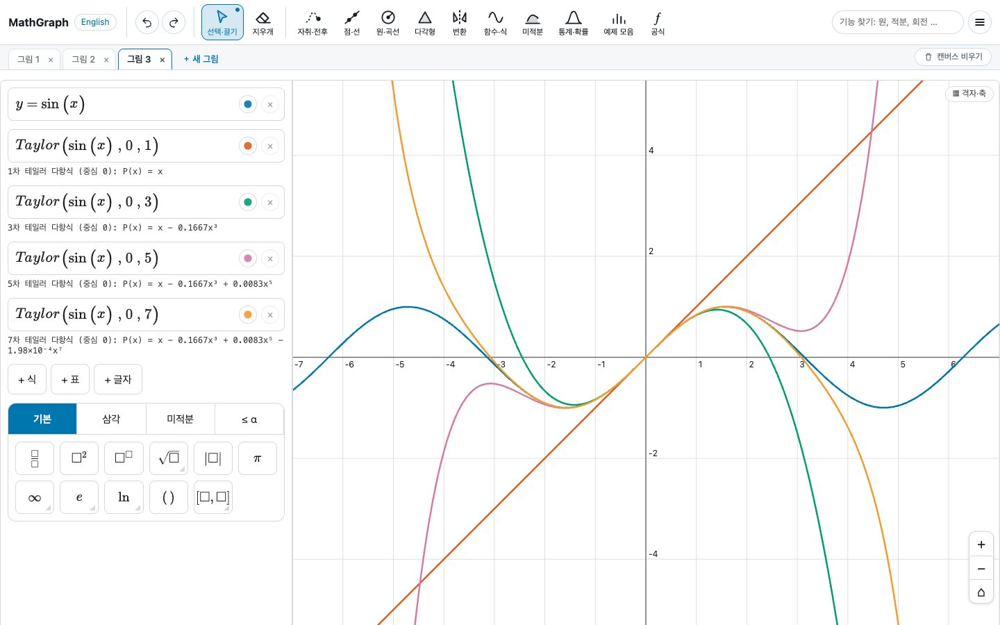
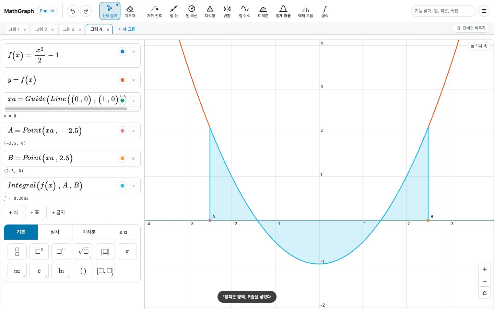
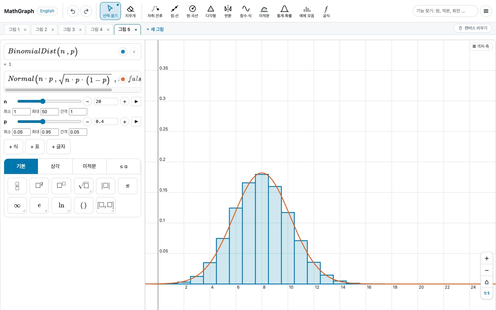

작도에서 미적분, 확률분포까지
항목에 마우스를 올리거나 누르면 그 화면이 보입니다.
- 기하 작도점, 선, 원, 다각형을 그리고 그 위에 중점, 각, 수직이등분선을 작도합니다.
- 테일러 근사sin(x)에 1차, 3차, 5차, 7차 다항식을 겹쳐 근사가 어떻게 좋아지는지 봅니다.
- 정적분 넓이두 점이 정한 구간에서 곡선 아래 넓이를 칠하고 값을 계산합니다. 점을 끌면 구간이 바뀝니다.
- 확률분포이항분포 막대 위에 정규 근사 곡선을 겹칩니다. n과 p는 슬라이더로 바꿉니다.



점을 끌면 도형이 따라옵니다
도형마다 어느 점과 식으로 만들었는지가 남아 있어서, 바탕이 된 점을 옮겨도 관계가 그대로 남습니다.
꼭짓점을 끌면 도형이 같이 움직입니다
꼭짓점을 끌면 그 점으로 만든 변, 원, 중점이 바뀐 위치에 맞춰 다시 그려집니다.
점을 도형에 붙입니다
점을 곡선이나 선분 위에 붙이면 끌어도 그 위에서만 움직입니다.
식을 고치면 곡선 위의 점도 바뀝니다
곡선의 식을 고치면 그 곡선 위의 점과 접선도 새 식에 맞춰 바뀝니다.
필요한 도구를 이름으로 찾습니다
위쪽 검색창에 「원」, 「적분」, 「회전」처럼 쓰면 필요한 기능을 찾아 줍니다.
작도
점·선, 원·곡선, 다각형, 자취, 회전 같은 변환.
미적분
도함수와 접선, 정적분, 리만 합, 테일러 근사, 푸리에 급수.
통계·확률
점그림, 상자그림, 히스토그램, 회귀선, 정규·이항·푸아송 분포.
예제 모음
기능마다 예제가 있어 불러온 뒤 고쳐 쓰면 됩니다.
내보내기
그림은 .png, .pdf, .html로, 작업 파일은 .json으로 저장합니다.
한국어·영어
화면을 한국어와 영어 중에서 고를 수 있습니다.
자주 묻는 질문
설치해야 하나요?
아닙니다. 웹 브라우저에서 주소를 열면 바로 씁니다.
그린 그림은 어디에 저장되나요?
작업은 쓰고 있는 브라우저에 자동으로 저장됩니다. 다른 기기에서 이어 쓰려면 .json 파일로 내보낸 뒤 불러오세요.
쓰는 법은 어디서 보나요?
도움말 페이지에 식 쓰는 법과 도구별 설명이 있습니다.
요금은 어떻게 되나요?
유료 서비스입니다. 이용 요금과 조건은 iworkonlabs@gmail.com으로 문의해 주세요.